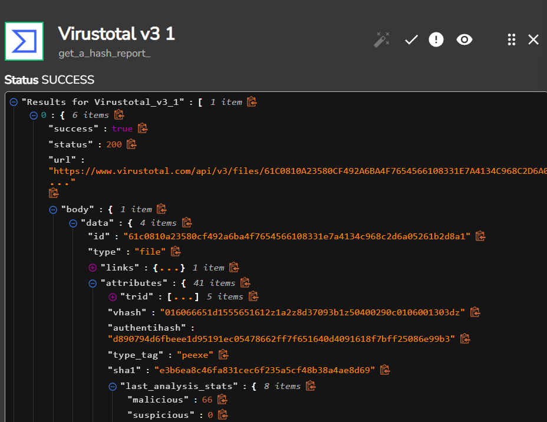

L'idée de ce projet a été de découvrir comment l'automatisation du SOC améliore la réponse aux incidents et accélère la détection des menaces.
Les éléments de ce lab :
 Wazuh ? -> Plateforme open-source de cybersécurité intégrant les fonctionnalités d'un SIEM et d'un XDR dans une seule solution.
TheHive -> Plateforme de gestion des incidents de sécurité
Shuffle -> Plateforme open-source SOAR
Wazuh ? -> Plateforme open-source de cybersécurité intégrant les fonctionnalités d'un SIEM et d'un XDR dans une seule solution.
TheHive -> Plateforme de gestion des incidents de sécurité
Shuffle -> Plateforme open-source SOAR
Machine cliente Windows
Afin d'avoir une idée plus claire de comment tout cela va fonctionner voici un schéma du projet :
La première étape a consisté à mettre en place une VM sous Windows 10 (qui dans notre cas représente le client windows au sein duquel va être installé l'agent Wazuh).
On va au sein de ce client installé Sysmon qui est un service et driver fournit dans le package Sysinternals de Microsoft permettant la journalisation des évènements Windows surtout sur les évènements de sécurité système (ex : Création de processus, modification de l'heure de création d'un fichier, connexion réseau, modification de l'état du service Sysmon,
fin d'un processus, chargement de pilote, etc...)
Il va agir comme un outil de détection.
Pour ce faire rien de plus, on se rend sur le site de Microsoft https://learn.microsoft.com/en-us/sysinternals/downloads/sysmon et on télécharge tout simplement Sysmon.
Pour l'installer cependant, nous allons lui spécifier un fichier de configuration lors de l'installation pour nous éviter d'en créer une de zéro
https://github.com/olafhartong/sysmon-modular.
Nous pouvons vérifier l'installation de Sysmon directement en se rendant dans Services et vérifier que Sysmon y apparaît bien.
Maintenant que nous avons notre client windows 10 avec Sysmon, place à la deuxième étape qui consiste à mettre en place nos serveurs Wazuh Manager ainsi que TheHive.
Pour rappel, notre serveur Wazuh va recevoir les évènements provenant de l'agent (client Windows 10).
Ces deux serveurs sont crées sur le cloud car on doit pouvoir y accéder depuis Internet.
Voici leur spécifications :
RAM : 8 GB RAM
HDD : 50 GB HDD
OS : Ubuntu 24.04 LTS
Pour information "TheHive utilizes Cassandra and Elasticsearch databases for data management and indexing purposes", raison pour laquelle il faut Cassandra et Elasticsearch d'installé avant de pouvoir utiliser TheHive.
Ceci étant fait passons dès maintenant aux configurations de TheHive et de Wazuh Server!
Commençons par la configuration de TheHive :
Dans un premier temps, on va configurer Cassandra qui agit en tant que base de données.
On modifiera alors le nom du cluster si on le souhaite mais surtout plusieurs adresses dont :
• Listen address :
Qui correspond à l'adresse IP utilisée par le noeud Cassandra pour écouter les connexions provenant d'autres noeuds du cluster.
• RPC Address :
Cette adresse IP est utilisée pour les communications entre Cassandra et les clients (ex : TheHive), elle permettra aux autres applications de s'y connecter et d'envoyer des requêtes.
• Seed address :
Ce sont des adresses qui aident à intier la communication et l'organisation dans un cluster Cassandra en indiquant aux nouveaux noeuds où se trouvent les autres noeuds du cluster.
Une fois cela fait on redémarre tout simplement le service.
Toujours dans la configuration de TheHive on va s'attaquer dès lors à celle d'Elastic Search.
Il faudra dans un premier temps décommenté les lignes suivantes "cluster.name", "node.name" et "http.port", en revanche il faudra modifier la ligne network.host en y ajoutant notre IP publique.
On redémarre le service et on vérifie son statut comme pour Cassandra.
Une fois cela fait on peut dès à présent configurer à proprement parler TheHive, enfin pas tout à fait il faut juste avant donner la permission à l'utilisateur thehive et au groupe thehive au répertoire /opt/thp.
Ceci fait, on peut enfin se rendre dans
Où on va modifier notamment les valeurs hostname par notre IP publique pour nous donner l'accès.
On enregistre la configuration on démarre et vérifie le statut du service et hop !
Nous voilà sur TheHive !
Maintenant que TheHive est configuré, place à la configuration de Wazuh!
On va dans un premier temps se connecter au dashboard par le biais de nos identifiants donnés lors de l'installation.
Une fois connecté on remarque qu'aucun agent n'a été ajouté cela est normal, puisque nous n'avons effectué aucune action en ce sens.
De ce fait, on va alors ajouter un agent.
On se retrouve alors au sein de la page de déploiement où l'on va devoir renseigner le package que l'on souhaite télécharger et installer sur le système cible.
Dans notre cas, Windows ainsi que d'autres options comme le nom de l'agent etc...
Enfin, la commande d'installation nous est alors fournie accompagnée de celle pour démarrer le service sur la machine cliente.
On se rend alors sur notre Windows 10 qui est une machine cliente je rappelle pour lancer les commandes d'installation
On peut vérifier la bonne installation en revenant dans le dashboard et on devrait alors apercevoir un agent apparaître
Maintenant nos actifs en place la prochaine étape va consister à générer de la télémétrie via la machine windows 10 et s'assurer que c'est bien ingéré au sein de Wazuh Manager.
Plus précisément, l'idée va être d'envoyer de la télémétrie contenant mimikatz en ayant au préalable configuré Wazuh sur la machine cliente pour qu'il transfère bien les évènements de type "mimikatz" et enfin, l'idée finale est alors de déclencher une alerte qui aura également été crée au préalable (suite à la détection de mimikatz).
Dans Wazuh, sur la machine cliente, le fichier "ossec.conf" est celui qui détermine les logs à surveiller, les règles de détection et les actions de sécurité à appliquer pour l'analyse de logs
Celui-ci doit être modifié pour permettre à Wazuh de recevoir les activités liées à l'utilisation de mimikatz car les journaux Windows Standard ne le permettent pas.
On va donc dans la partie "Log analysis" de l'ossec.conf y ajouter Sysmon :
On peut dès lors, redémarrer le service Wazuh au sein de la machine et se rendre sur notre dashboard Wazuh pour y vérifier la bonne apparition des évènements Sysmon.
Parfait !
On reçoit bien les évènements de notre machine cliente (win10-client) liés à Sysmon au sein du dashboard !
La prochaine étape va consister à télécharger mimikatz sur cette machine.
Bien évidemment pour faire cela nous allons devoir désactiver Windows Defender ou au moins ajouter le dossier téléchargements en exclusion au sein des paramètres de Windows Defender.
Ceci étant fait on télécharge et on démarre mimikatz au sein d'un terminal PowerShell puis on se rend sur notre dashboard Wazuh en espérant qu'il ait détecté quelque chose.
Malheureusement, cela ne va pas être détecté instantanément par Wazuh car par défaut, pas tous les logs vont être affichés au sein du dashboard.
Seulement ceux qui déclenchent une règle vont être affichées c'est pour cela que l'on va configurer Wazuh de sorte a ce qu'il les affiche tous et ce, qu'ils répondent à une règle ou non.
L'idée est de faire en sorte que le Wazuh manager archive tous les logs et nous permet d'effectuer une recherche dans celle-ci.
Bien évidemment cela est pertinent uniquement pour des situations de test comme pour ce lab par exemple.
Affichons donc tous les logs !
Comme pour la machine cliente, le serveur Wazuh dispose également d'un fichier ossec.conf dans lequel on va passer les paramètres "logall" et "logall_json" à "yes"
Maintenant ceci fait on va se rendre dans le fichier "filebeat.yml" qui est le fichier déterminant comment les logs seront collectés traités et envoyés à Elasticsearch dans notre cas pour passer la variable enabled à true car en effet, ayant activé tous les logs ceux-ci vont être contenus au sein du dossier archives et pour les voir s'afficher il faut autoriser les archives au sein du filebeat.
Après avoir redémarré respectivement le service wazuh-manager et le filebeat, de retour sur notre dashboard nous allons créer un "Index patterns" qui va nous permettre d'afficher tous les logs qu'ils répondent à une règle ou non.
Ce pattern index maintenant crée si depuis notre machine cliente on regénère de la donnée avec mimikatz (relançons par exemple) et que l'on tape mimikatz dans notre index préalable créée sur Wazuh on devrait cette fois bien avoir de la donnée!
Bingo !
On reçoit bien les évènements liés à mimikatz, on en voit 2 précisément mais celui qui nous intéresse est celui content l'event ID 1 car si l'on se réfère à la documentation de sysmon l'event ID 1 fournit des informations sur la création de processus et est donc plus fiable que l'event ID 7 juste au dessus.
C'est une bonne chose de voir que l'on peut détecter du mimikatz mais le but est plutôt que d'aller faire toute cette recherche d'être directement alerté !
C'est pour cela que l'on va créer une règle de détection de cet event ID 1 de Sysmon avec le nom de fichier mimikatz.
À savoir qu'au sein de Wazuh, une règle existe pour les évènements Sysmon liés à l'Event ID1 dont on va se servir pour custom notre propre règle en y ajoutant notamment le fait qu'en plus d'avoir cet Event ID de 1, il faut que le nom ORIGINAL du fichier soit mimikatz, donc même si le nom du fichier a été changé en cours de route puisqu'on se base sur le nom ORIGINAL cela déclenchera tout de même l'alerte.
Je vais volontairement changer le nom de mimikatz par autre chose pour prouver que même si on modifie le nom de l'application, l'alerte va tout de même se déclencher.
Nous avons bien des alertes qui se déclenchent dûes au lancement de mimikatz et si l'on regarde en détails, on s'aperçoit que dans le champ "data.win.eventdata.image" on y trouve un nom différent de mimikatz.exe tandis que dans le data.win.eventdata.originalFileName on le trouve bien.
Parfait, arrivé à cette étape nous avons notre SIEM/XDR (Wazuh) ainsi que notre plateforme de réponse à incident (TheHive) qui sont configurés, cependant ces deux plateformes ne communiquent pas ensemble.
C'est là que le SOAR (Shuffle) entre en jeu même si l'intermédiation n'est pas son but premier.
Pour faire simple, Shuffle est une plateforme SOAR opensource qui permet aux équipes de sécurité d’orchestrer et d’automatiser le traitement d’incident sécurité de bout en bout.
Dans cette quatrième étape, le but va être via Shuffle de créer un workflow qui va :
Recevoir une alerte mimikatz de Wazuh Manager -> Extraire le hash SHA256 du fichier -> Vérifier le score de réputation sur VirusTotal -> Créer une alerte sur TheHive -> Envoyer un mail à l'analyste SOC (moi) afin qu'il puisse commencer l'investigation.
Pour recevoir une alerte mimikatz de Wazuh il faut impérativement connecter Shuffle à Wazuh, pour cela, on va utiliser une fonctionnalité présente au sein du workflow sur Shuffle qui est le webhook.
Une fois ce webhook ajouté on va y copier le webhook URL que l'on va devoir ajouté au sein d'un "integration tag" que l'on va lui même ajouté au fichier de configuration de Wazuh, je ne rentrerai pas plus dans le détail de l'intégration de Wazuh avec Shuffle pour plus d'informations la documentation de Wazuh est disponible ici : https://wazuh.com/blog/integrating-wazuh-with-shuffle
Parfait, pour tester la bonne intégration on retourne sur Shuffle et on démarre tout simplement le webhook, celui-ci nous affiche alors les détails de l'alerte générés sur Wazuh.
Le premier objectif de notre workflow (Recevoir les alertes mimikatz) est atteint.
Dès à présent, nous souhaitons extraire le hash SHA256 du fichier et pour ce on va devoir ajouter un nouvel élément ("Shuffle Tool") au sein du workflow qui va extraire le SHA256 du fichier contenu dans l'alerte à l'aide d'une regex que voici : SHA256=([A-Fa-f0-9]{64})
Cette expression régulière va au sein des détails de l'alerte wazuh récupérer la valeur SHA256 uniquement qui va être affichée par le Shuffle Tool
C'est magnifique !
On a maintenant le SHA256 extrait on peut alors automatiser l'envoi de ce hash à Virus Total qui va vérifier sa réputation.
Pour faire ceci il va falloir dans un premier temps créer un compte sur Virus Total (que je possède déjà donc pas de création) et bien copier l'API key qui va être utilisée sur Shuffle car oui, on utilise l'API de Virus Total pour cela.
De retour sur Shuffle, on va ajouter un nouvel élément de type "Virustotal" au workflow dans lequel on va devoir notamment renseigner l'API key et l'action que l'on souhaite effectuer ("Get a hash report" dans notre cas) et bingo, on reçoit bien un retour de notre requête sur Virustotal avec le sha256, on obtient alors des infos sur le fichier en question.

Place maintenant à l'intégration de Shuffle avec TheHive.
Après avoir ouvert le flux réseau en 0.0.0.0:9000 vers TheHive notre plateforme on va alors pouvoir se rendre sur notre dashboard et créer 2 nouveaux utilisateurs l'un que je vais appeler "iambrice" (Analyste SOC) et un second du nom de "shuffle" avec lequel on va cette fois-ci lui attribuer une clé API qui sera utilisé pour l'authentification de notre SOAR à la plateforme TheHive.
Comme pour l'intégration précédente, on va ajouter l'élement TheHive au workflow qui nous permettra d'effectuer une requête API pour créer une alerte sur TheHive et ce, depuis Shuffle.
Voici le body de la requête JSON
"type": "Internal",
"description": "Mimikatz detected on host: $exec.text.win.system.computer from user: $exec.text.win.eventdata.user",
"source": "Wazuh",
"sourceRef": "Rule 100002",
"title": "Mimikatz Detection",
"summary": "Mimikatz activity detection on host: and the process ID is: $exec.text.win.eventdata.processId and the Command line is: $exec.text.win.eventdata.commandLine"
}
Ceci étant fait on peut alors rerun le workflow et si tout a bien été effectué, en se rendant sur TheHive on devrait alors voir une nouvelle alerte apparaître, ce qui est bien le cas !
Notre alerte a bien été crée avec les arguments renseignés au sein du body JSON précédemment!
Ok parfait c'est bien beau d'avoir toutes ces créations d'alertes d'intégration sur différentes plateforme mais si l'information que tout cela a été crée n'est pas donnée à l'analyste SOC cela en devient inefficient, c'est pour cela que l'on va simultanément alerter par mail l'analyste.
De retour sur notre SOAR, Shuffle on va encore ajouter un élément qui cette fois-ci est Email.
Au sein de celui-ci on y renseigne l'adresse mail à laquelle on souhaite envoyer le mail, le titre et le corps du mail.
On sauvegarde le tout et on run le workflow.
Bingo!
On reçoit bien un mail sur notre boîte nous informant de l'utilisation de mimikatz sur un hôte !
Ce projet inspiré de la chaîne de YouTube de MyDFIR ( https://www.youtube.com/@MyDFIR) touche à sa fin et m'aura permis de mettre en exergue l'automatisation au sein d'un environnement SOC par le biais notamment du SOAR.
Cela permet de gagner, ce qu'il y a bien souvent de plus précieux : du temps.
Je vous remercie pour la lecture entière de ce projet que j'ai trouvé fort intéressant et passionnant à effectuer.
(Une version "pour aller plus loin" de ce projet consisterait à créer un workflow de "réponse" à l'alerte qui par exemple isolerait la machine hôte du réseau).